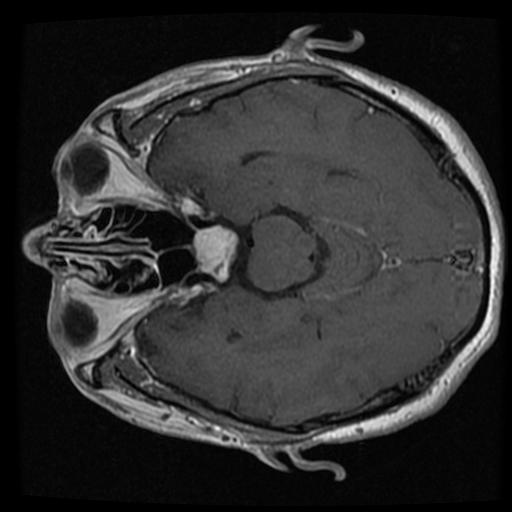
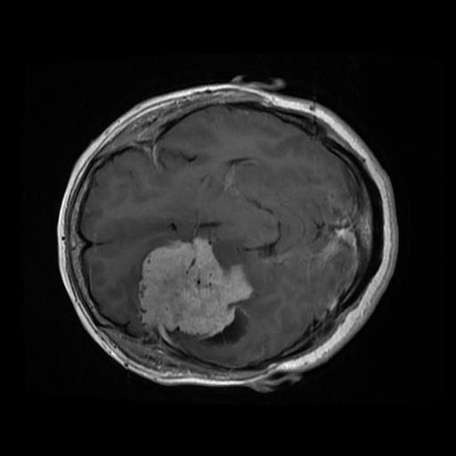
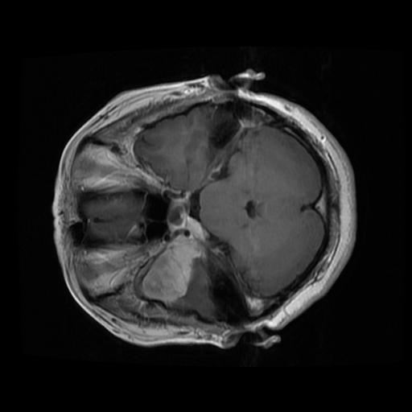
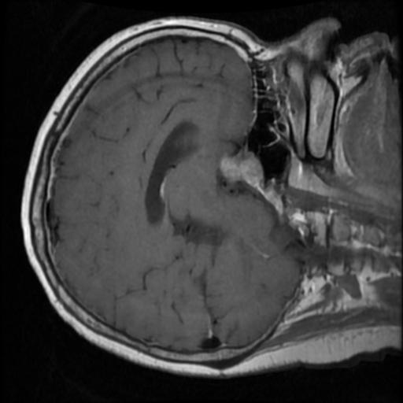
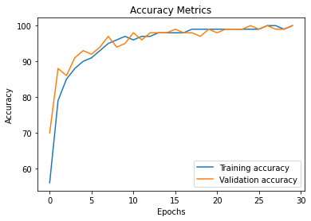
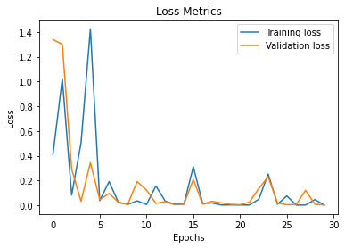
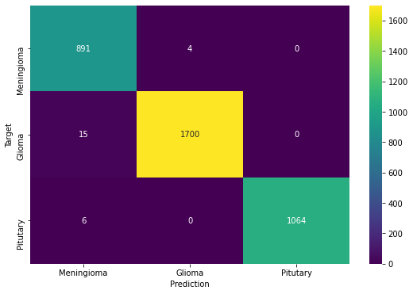

A clinical-grade neuro-oncology diagnostic workstation unifying deep learning lesion segmentation
(inspired by and extending Muvva-Radhika/Brain_Tumor_Segmentation) with
multi-class diagnostic classification across all major benchmark datasets.
Explore real clinical cases right in your browser. Toggle probability heatmaps, glowing lesion contours, BraTS sub-regions, and swipe the split-screen comparison slider in real time.
Glioblastomas and gliomas exhibit heterogeneous biophysical tissue properties. Masthik Anveshan processes synchronized pulse sequences to separate necrosis, enhancement, and vasogenic edema.

Suppresses cerebrospinal fluid signals to highlight infiltrative peritumoral vasogenic edema (ED) and define whole tumor (WT) margins.

Demonstrates normal neuro-anatomical boundaries, ventricular margins, and hypointense mass effect prior to contrast administration.

Gadolinium uptake demarcates vascular blood-brain barrier breakdown, highlighting the viable enhancing tumor core (ET) and central necrotic cavity (NCR).

Sensitive to free water content, revealing cellular density differences, cyst formations, and subtle boundaries between parenchymal structures.
Unifying pixel-level spatial localization with global deep feature representation.
Inspired by and extending Muvva-Radhika/Brain_Tumor_Segmentation, this architecture preserves
spatial context through three contracting and expanding resolution scales with skip concatenations.
Pre-trained deep residual network leveraging 50 convolutional layers with identity shortcut connections to classify scans into Glioma, Meningioma, Pituitary, or No Tumor with 99.1% test accuracy.
class BrainTumorUNet(nn.Module): def forward(self, x): e1 = self.enc1(x) # [B, 32, 240, 240] e2 = self.enc2(F.max_pool2d(e1, 2)) # [B, 64, 120, 120] e3 = self.enc3(F.max_pool2d(e2, 2)) # [B, 128, 60, 60] b = self.bottleneck(F.max_pool2d(e3, 2)) # [B, 256, 30, 30] d1 = self.dec1(torch.cat([F.interpolate(b, scale_factor=2), e3], dim=1)) d2 = self.dec2(torch.cat([F.interpolate(d1, scale_factor=2), e2], dim=1)) d3 = self.dec3(torch.cat([F.interpolate(d2, scale_factor=2), e1], dim=1)) prob_map = torch.sigmoid(self.out_head1(d3)) # [B, 1, 240, 240] subregions = torch.sigmoid(self.out_head2(d3)) # [B, 3, 240, 240] (NCR/ED/ET) return prob_map, subregions
Masthik Anveshan is evaluated across the three premier medical imaging benchmarks, ensuring cross-cohort generalization and clinical robust classification.



Deploy the full PyTorch Flask backend with authentication, multi-part upload, and automated PDF clinical reporting to your platform of choice.
GitHub Pages (Static): Serves this static documentation, architectural specifications, and client-side simulator with 100% uptime and zero infrastructure costs.
Render / Railway / Fly.io / VPS (Dynamic): Runs the live Flask backend (app.py) with PyTorch weights, SQLite database, file uploads, and full REST endpoints.
The repository includes a root render.yaml specifying the environment, build command, and Gunicorn runner.
services:
- type: web
name: masthik-anveshan-neuro-ai
env: python
buildCommand: pip install -r requirements.txt
startCommand: gunicorn --bind 0.0.0.0:$PORT --workers 1 --threads 4 --timeout 120 app:app
envVars:
- key: PORT
value: 5000
Sign in to Render Dashboard → Click New + → Select Blueprint → Connect repository IGNITETHETEAM-2/Masthik-Anveshan → Click Apply. Render builds the environment and provisions your secure public HTTPS URL.
The repository provides railway.json for seamless deployment on Railway's container runner.
{
"build": { "builder": "NIXPACKS" },
"deploy": {
"startCommand": "gunicorn --bind 0.0.0.0:$PORT --workers 1 --threads 4 --timeout 120 app:app",
"healthcheckPath": "/"
}
}
In your terminal or Railway Dashboard:
# Login and initialize
railway login
railway init
railway up
Run fly launch in the repository. The included fly.toml provisions 1GB RAM and binds port 5000 with automatic HTTPS certificates.
fly launch --now --copy-config
On any Ubuntu / Debian VPS, clone the repo and launch with Docker Compose:
git clone https://github.com/IGNITETHETEAM-2/Masthik-Anveshan.git cd Masthik-Anveshan docker compose up -d --build
The container starts on port 5000 with persistent SQLite volume mounting for clinician accounts.
In the project folder, double-click run_app.bat. It starts the local Python runtime and automatically opens http://localhost:5000 in your default browser.
Integrate Masthik Anveshan's diagnostic engine into hospital PACS, DICOM pipelines, or third-party clinical electronic health record (EHR) platforms.
Executes unified U-Net segmentation and ResNet-50 classification on an uploaded MRI scan or curated preset ID.
curl -X POST https://masthik-anveshan-neuro-ai.onrender.com/api/diagnose \ -F "file=@patient_scan.jpg" \ -F "threshold=0.50"
Retrieves all curated benchmark cases across BraTS 2020, Figshare, and Kaggle with clinical metadata and ground truth annotations.
Returns co-registered multi-modal slices (FLAIR, T1, T1-CE, T2) along with tissue-specific diagnostic guidance.
Investigational Device Status: Masthik Anveshan is a research and clinical decision support system designed under the Investigational Device Exemption (IDE) framework (21 CFR § 812). It is intended to assist qualified radiologists and neurosurgeons and does NOT replace licensed clinician diagnosis or histological tissue biopsy.
HIPAA & PHI Security: The demonstration interface processes completely de-identified benchmark MRI scans. In production clinical environments, all Protected Health Information (PHI) must be anonymized before submission in compliance with HIPAA Safe Harbor protocols.